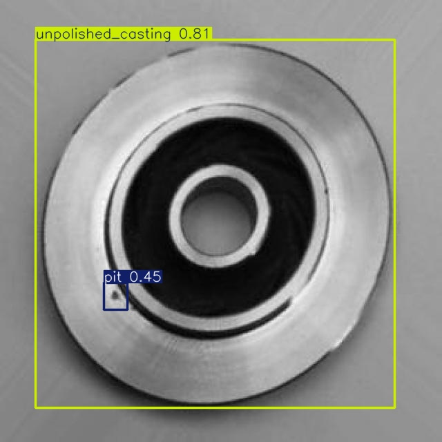
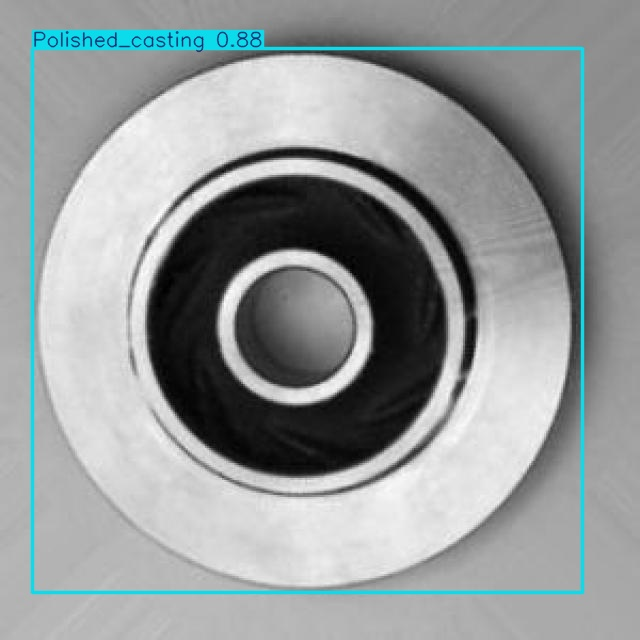

Informe de Resultados
Detección de Defectos en Piezas de Fundición CNC mediante YOLOv8
1. Objetivo
Entrenar y evaluar un modelo de detección de objetos de la familia YOLOv8 capaz de identificar defectos en piezas de fundición CNC (rebabas, grietas, picaduras, rayones y deformaciones) y de distinguir el estado del acabado superficial de la pieza, como base para un sistema de inspección de calidad automatizado en una línea de producción.
2. Configuración experimental
El modelo se entrenó en la nube (Google Colab) sobre una unidad de procesamiento gráfico NVIDIA Tesla T4, partiendo de los pesos preentrenados YOLOv8s (aprendizaje por transferencia desde el conjunto de datos COCO).
| Parámetro | Valor |
|---|---|
| Arquitectura | YOLOv8s (small) |
| Conjunto de datos | casting-detection v10 (Roboflow Universe) |
| Imágenes (entrenamiento / validación / prueba) | 3 659 / 391 / 220 |
| Número de clases | 8 |
| Épocas | 50 |
| Resolución de entrada | 640 × 640 px |
| Tamaño de lote | 16 |
| Optimizador | SGD (configuración automática de Ultralytics) |
| Hardware | GPU NVIDIA Tesla T4 (16 GB) |
Las ocho clases del conjunto de datos son: Casting_burr,
Polished_casting, burr, crack, pit,
scratch, strain y unpolished_casting.
3. Métricas globales de validación
runs/entrenamiento/defectos_yolov8/results.csv (última fila).| Métrica | Valor | Interpretación |
|---|---|---|
| Precisión (Precision) | 0.80 | De cada 100 defectos detectados, aproximadamente 80 eran correctos (pocos falsos positivos). |
| Exhaustividad (Recall) | 0.74 | El modelo identificó cerca del 74 % de los defectos realmente presentes. |
| mAP@0.5 | 0.78 | Precisión media con solapamiento IoU mayor o igual a 0.5. Indica buena capacidad de detección. |
| mAP@0.5:0.95 | 0.57 | Métrica estricta (promedio sobre varios umbrales de IoU). Localización correcta, pero con margen de mejora. |
El valor de mAP@0.5 de 0.78 indica un desempeño satisfactorio para una aplicación de inspección industrial. La diferencia respecto al mAP@0.5:0.95 de 0.57 es esperable y señala que el ajuste fino de las cajas delimitadoras (la localización exacta) constituye el principal margen de mejora.
4. Curvas de entrenamiento

- Convergencia. Las tres funciones de pérdida de entrenamiento
(
box_loss,cls_lossydfl_loss) descienden de forma sostenida, lo que confirma un aprendizaje correcto y estable. - Discontinuidad en la época 40. El repunte observado en
box_lossydfl_lossalrededor de la época 40 no constituye un error, sino la desactivación automática de la augmentación mosaic (parámetroclose_mosaic), comportamiento estándar de YOLOv8 que ajusta el modelo sobre imágenes reales durante las últimas diez épocas. - Generalización. Las pérdidas de validación se estabilizan sin incrementarse de forma pronunciada, por lo que no se observa sobreajuste severo. Las métricas se estabilizan a partir de la época 30-35, lo que indica que el modelo había convergido.
5. Matriz de confusión

El desempeño es heterogéneo entre las distintas clases:
| Clase | Aciertos | Exhaustividad aprox. | Valoración |
|---|---|---|---|
Polished_casting | 202 | 91 % | Excelente |
Casting_burr | 88 | 99 % | Excelente |
pit (picadura) | 75 | 85 % | Bueno |
unpolished_casting | 65 | 83 % | Bueno |
crack (grieta) | 126 | 69 % | Aceptable |
strain (deformación) | 5 | 62 % | Limitado (pocas muestras) |
scratch (rayón) | 116 | 42 % | Deficiente |
burr | 0 | — | Sin muestras de prueba |
Hallazgos principales
- Las clases asociadas al estado de la pieza,
Polished_casting(202 aciertos) yCasting_burr(88 aciertos), se detectan prácticamente sin error; el sistema distingue con fiabilidad una pieza conforme de una con rebaba de fundición. - La principal confusión se produce entre
scratchy el fondo: 144 rayones reales se clasificaron como fondo (no detectados) y 86 regiones de fondo se detectaron como rayón (falsos positivos). Este comportamiento es coherente con la naturaleza del defecto, pues los rayones son finos y de bajo contraste. - Existe confusión entre
crackypit: 26 grietas se predijeron como picaduras y 11 picaduras como grietas, lo cual resulta razonable al tratarse de defectos pequeños y localizados. - La clase
burrno es predicha por el modelo y carece de instancias de prueba relevantes, debido a la redundancia de etiquetas del conjunto de datos comunitario (burrfrente aCasting_burr). - Se observa un desbalance de clases:
strainyburrestán muy poco representadas, lo que limita su evaluación y su desempeño.
6. Ejemplos de inferencia
A continuación se muestran ejemplos representativos de la inferencia del modelo sobre el
conjunto de prueba. Las 220 imágenes anotadas se encuentran disponibles en el directorio
evidencias/predicciones/ del repositorio.


7. Discusión y limitaciones
- El conjunto de datos es de origen comunitario, con etiquetas solapadas
(
burr/Casting_burryPolished/unpolished) y desbalance de clases, lo que penaliza las métricas globales a pesar del buen comportamiento en las clases principales. - Los defectos sutiles, como los rayones (
scratch), requieren mayor resolución o una iluminación controlada (por ejemplo, iluminación rasante) para mejorar su detección. - El valor de mAP@0.5:0.95 indica que la localización de las cajas podría afinarse con un mayor número de épocas de entrenamiento o con un modelo de mayor capacidad (YOLOv8m).
8. Conclusiones
El modelo YOLOv8s entrenado resulta viable para la inspección automatizada de piezas de fundición, con un desempeño sobresaliente en la discriminación entre piezas conformes y piezas con rebaba, y un valor de mAP@0.5 de 0.78. Las principales líneas de mejora son:
- Equilibrar y depurar el conjunto de datos, unificando las clases redundantes y
añadiendo muestras de
scratchystrain. - Aumentar el número de épocas o el tamaño del modelo (por ejemplo, YOLOv8m) para mejorar la localización (mAP@0.5:0.95).
- Mejorar la adquisición de imagen (iluminación rasante y mayor resolución) para realzar los defectos de bajo contraste.